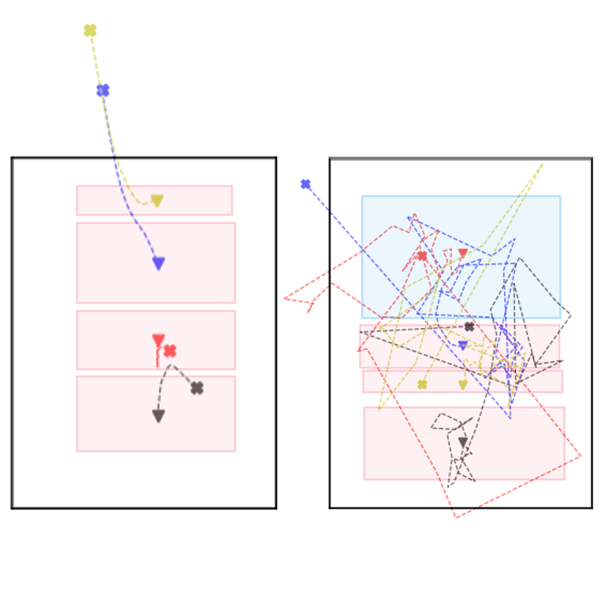
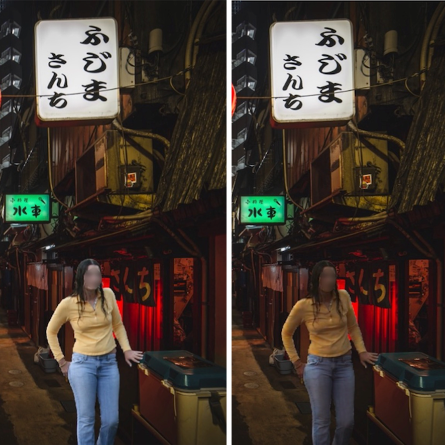
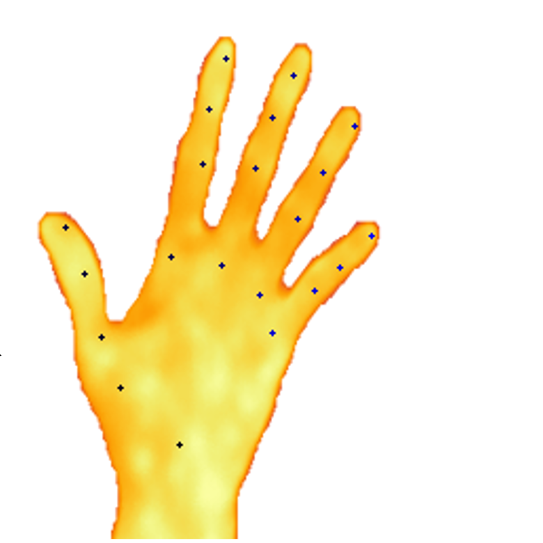

|

|
LayoutFlow: Flow Matching for Layout Generation
Julian Jorge Andrade Guerreiro, Naoto
Inoue, Kento Masui, Mayu Otani, Hideki Nakayama
ECCV, 2024
Project Page /
Code
Flow Matching for Layout Generation provides a more geometrically intuitive approach, while also
significantly speeding up the generation process.
|
|

|
PCT-Net: Full Resolution Image Harmonization Using Pixel-Wise Color
Transformations
Julian Jorge Andrade Guerreiro, Mitsuru Nakazawa, Bjorn Stenger
CVPR, 2023
Code
We enable efficient full-resolution Image Harmonization by introducing pixel-wise color
transformations (PCTs). Work was done while interning at Rakuten Institute of Technology.
|
|

|
Detection of Osteoarthritis from Multimodal Hand Data
Julian Jorge Andrade Guerreiro, Yoshimitsu Aoki, Shuntaro Saito, Katsuya
Suzuki
EMBC, 2022
We investigate the effectiveness of different modalities, namely RGB images, video, and thermal
images, to detect Osteoarthritis.
|
|
University of Tokyo
Ph.D. course in Creative Informatics
Apr 2023 - Mar 2026 (expected)
Keio University
M.Sc. in Electrical Engineering
Oct 2020 - Mar 2022
RWTH Aachen University
M.Sc. in Electrical Engineering
Oct 2019 - Feb 2023
RWTH Aachen University
B.Sc. in Electrical Engineering
Oct 2016 - Sep 2019
|
|
{kind=link}